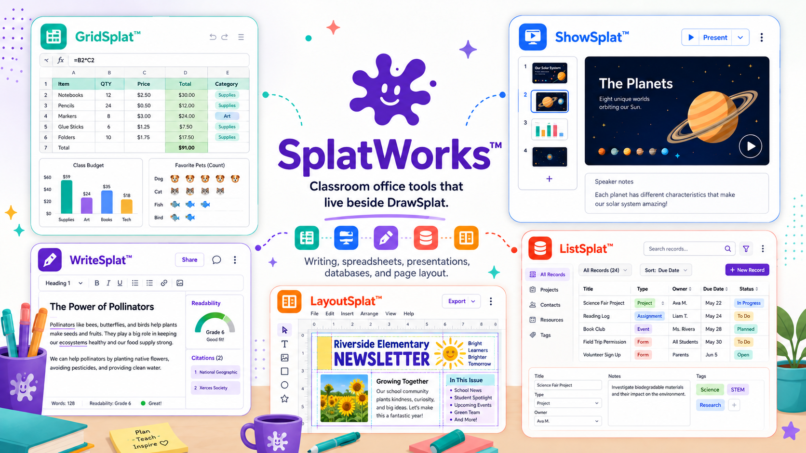

GridSplat™
Spreadsheet workspace for classroom data, formulas, cell formatting, charts, picture graphs, activities, templates, and local/cloud file workflows.
SplatWorks™

Apps
GridSplat, ShowSplat, WriteSplat, and ListSplat are available as browser-based SplatWorks apps.
Spreadsheet workspace for classroom data, formulas, cell formatting, charts, picture graphs, activities, templates, and local/cloud file workflows.
Interactive slide deck and WebDeck authoring tool with thumbnails, canvas editing, media insertion, speaker notes, themes, templates, and HTML export.
Browser-based word processor for classroom drafts, local autosave, native JSON files, readability, templates, cloze passages, citations, and student/teacher exports.
Classroom database workspace for tables, fields, records, CSV files, forms, cards, labels, reports, search, sorting, and child-friendly project templates.